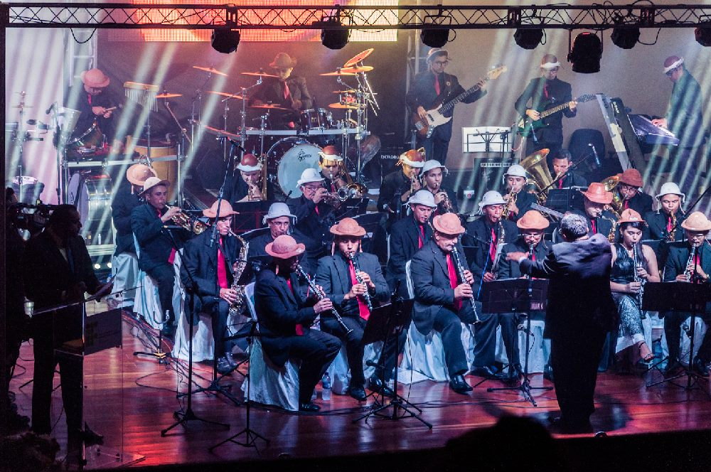
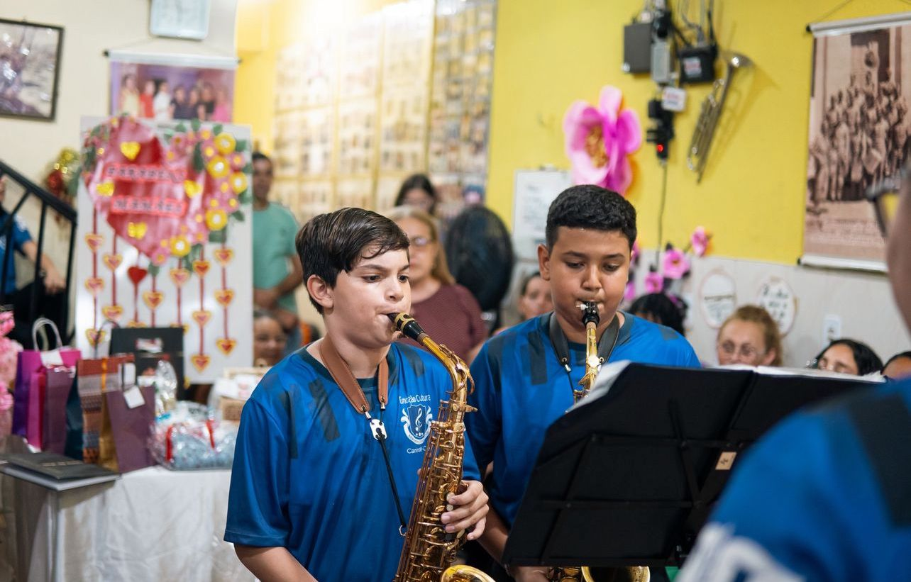
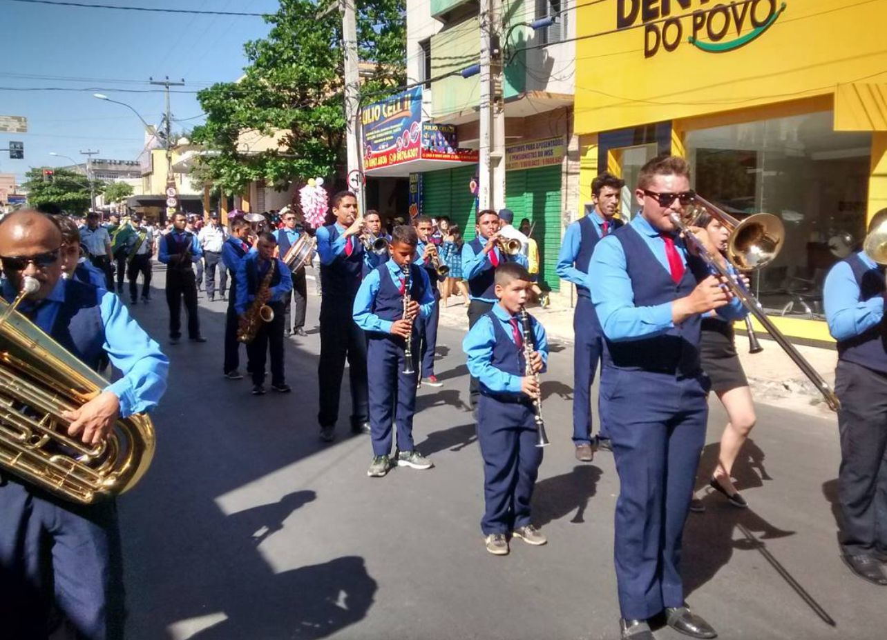
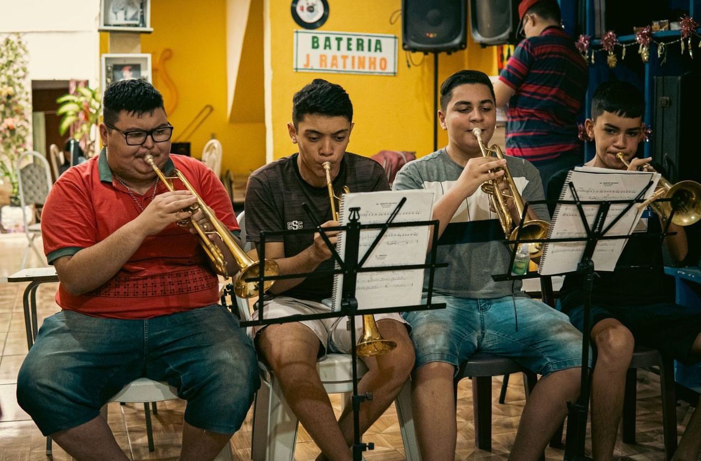

Preservando a música e a cultura de Canindé e região desde 1960
A Fundação Cultural Maestro J. Ratinho, criada em 2007, é uma entidade sem fins lucrativos que tem como missão preservar, divulgar e promover a cultura musical, através de uma série de projetos sociais e educativos. A fundação é a responsável pela Orquestra de Sopros Maestro J. Ratinho, que há mais de 60 anos representa a cultura de Canindé e região.
Nosso trabalho é voltado para a educação musical de jovens e adultos, promovendo inclusão social e dando oportunidade para que a música seja uma ferramenta de transformação na vida das pessoas. Ao longo dos anos, realizamos diversos projetos, como o "Carnaval da Saudade" e o "Natal Sonho de Criança", sempre com o objetivo de fortalecer a cultura local e oferecer à população eventos de alta qualidade.
A Fundação Cultural Maestro J. Ratinho é uma instituição dedicada à promoção da cultura e da educação musical, atuando como um espaço de formação e valorização da arte. Criada com o propósito de ampliar o acesso à música e incentivar o desenvolvimento de novos talentos, a fundação tem desempenhado um papel fundamental na vida de jovens e adultos que desejam aprender e se especializar em diversas áreas da música.
Com uma trajetória marcada pelo compromisso com a inclusão e a excelência artística, a fundação oferece uma estrutura de ensino abrangente, disponibilizando aulas teóricas e práticas, além de ensaios e apresentações que permitem aos alunos vivenciarem a experiência musical em sua plenitude. Seu objetivo é não apenas ensinar música, mas também estimular a disciplina, o trabalho em equipe e o crescimento pessoal por meio da arte.
Além das atividades pedagógicas e artísticas, a fundação também realiza projetos sociais, proporcionando oportunidades para crianças, adolescentes e adultos que encontram na música um caminho para o desenvolvimento pessoal e profissional. Parcerias com instituições, órgãos públicos e empresas têm sido fundamentais para a manutenção e expansão dessas iniciativas, permitindo que mais pessoas tenham acesso gratuito às atividades musicais. A Fundação Cultural Maestro J. Ratinho acredita que a música tem o poder de transformar vidas e construir um futuro melhor para a comunidade. Seja por meio da educação, da performance ou da interação social, a fundação segue firme em sua missão de difundir a cultura e formar gerações de músicos comprometidos com a arte e a sociedade.
Na Fundação, desenvolvemos diversos projetos que envolvem educação musical, cultura e cidadania. Entre eles, destacamos:
Para mais informações sobre nossos projetos ou qualquer outra dúvida, entre em contato conosco:
Telefone: (85) 3343-0799
E-mail: fundacaojratinho@gmail.com
Mais Informações